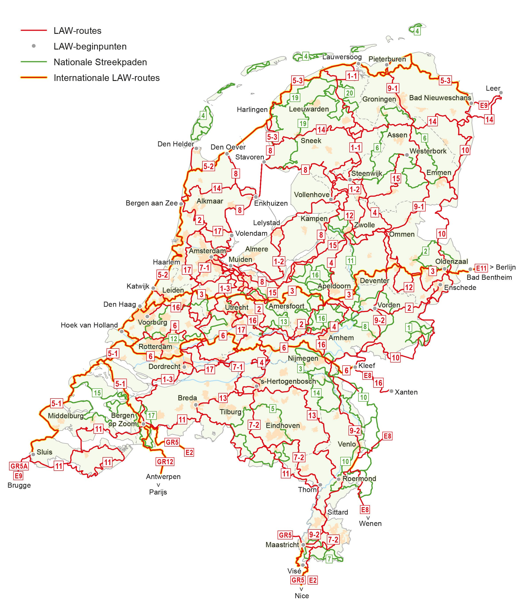

Voor wie nog nooit van een LAW of streekpaden gehoord heeft. Zal de
naam Pieterpad wel een belletje doen rinkelen. Dit is het bekendste
lange afstand wandelpad van Nederland. Dit is een pad van 496
kilometer lang die je vanaf Pieterburen naar Maastricht kan
wandelen. Streekpaden is minder bekend buiten niet wandelaars om.
Dit zijn ook wel lange paden maar in een streek. Zo zijn er het
Elfstedenpad, het Drenthepad en het Veluwse Zwerfpad. Om er zo maar
een paar te noemen.
Welkom!



Door op een van de twee logo`s te klikken brengt dit naar een pagina
met twee verhalen van een LAW en een Streekpad die ik gewandeld heb.
*Dit is een test site die ik maak voor een 'mini cours' HTML en CSS
via de "Winc Academy".